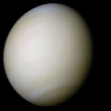
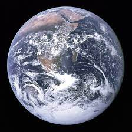

Mercury
Mercury is the first planet of the sun. It was named after the messenger of the roman god. diameter is 4,879 km distance between the sun is 58 million km time to spin once/rotate is 59 days time to orbit/revolve the sun is 88 days, Average temperature is 167°C, number of moons is 0 one of the rocky plant also is the smallest planet in the Solar System and the closest to the Sun. Its orbit around the Sun takes 87.97 Earth days, the shortest of all the Sun's planets.

Venus
Venus is the Second Planet of the sun also know as the hottest planet in the solar system, it was named after the roman goddess of love and beauty, th diameter is 12,104 km ( 0.95 times Earth ), the distance between the sun is 108 million km, times to spin/rotate is 243 earth days, time to orbit the sun is 225 earth days, average teperatures is 464°C number of moons are 0

Earth
Earth is the third planet of the sun. It was named after an old English word for ground or soil, Diameter of the Earth is 12,756 km, distance from the sun is 149.6 million km, time to spin/rotate is 224 hours. time to revolve/orbit is 365.25 days. the average temperature is 15°C, Number of moons is 1 moon.

Mars
Mars is the Forth planet.It was named after the roman god of war, Diameter of Mars 6792 km, Distance from the sun is 228 million km, time to rotate is 24.6 hours, time to orbit/revolve the sun is 687 days, Average temperature is -65°C, Number of moons are 2.

Jupiter
Jupiter is fifth planet. It is named after The king of the roman gods, diameter of the Jupiter is 142,984 km (11.2 times earth), distance from the sun is 779 million km, Time to spin is 10 hours, time to orbit is 11.9 years, average temperature is -110°C, jupiter has 67 moon.

Saturn
Saturn is sixth planet. It was named after the roman god of Agriculture, Diameter is 120 536 km (9.5 time Earth), Distance from the sun is 1434 million km. time to spin is 10.7 hours. 29.4 years, average temperature is -140°C, Number of moons is 62.

Uranus
Uranus is the seventh planet. It was named after the greek god of sky, the diameter 51,118 km ( 4.0 times Earth ), Distance from the sun was 2873 million km, Time to spin is 17.2 hours, time to orbit the sun is 83.7 years, Average temperature is -195°C, number of moon is 27.

Neptune
Neptune eighth planet, it was amed after the roman god of sea, diameter is 49,528 km (3.9 time Earth), Distance from the sun is 4495 million km, time to spin is 16.1 hours, time to orbit is 164 years, average temperature is -200°C, number of moons is 14.